01
Anthropic 拟设随估值增长的公益股权基金

Anthropic 宣布拟将 5% 股份投入全资公益基金，仍需股东批准。估值每较基准增长 50%，董事会可酌情追加 2%。基金采用 LLC 结构，可支持多种捐赠及劳动者援助方式；治理细节尚待公布，不能将承诺视为已完成分配。
每天一次，过滤 AI 噪音
Anthropic 宣布拟将 5% 股份投入全资公益基金，仍需股东批准。估值每较基准增长 50%，董事会可酌情追加 2%。基金采用 LLC 结构，可支持多种捐赠及劳动者援助方式；治理细节尚待公布，不能将承诺视为已完成分配。
SemiAnalysis 预测 2027 年数据中心可能新增 50GW，摘要提到在建 60GW 及年内签署的大量租赁合同，并认为瓶颈可能转向芯片。这些属于研究机构的预测与领先指标，不能等同于已交付容量。
The Verge 援引安全研究及路透社报道，称一名操作者利用 AI 智能体入侵逾百个网站，涉及 John Deere、SharkNinja 和 Cummins。各公司披露的影响范围不同，John Deere 表示未发现敏感信息被访问迹象，SharkNinja 称受影响的是独立支持网站。
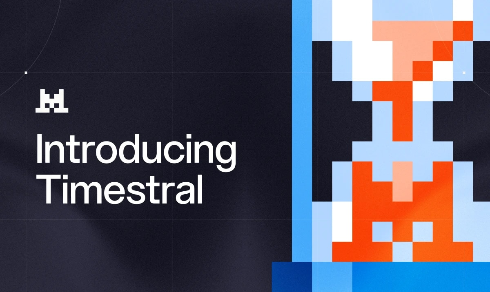
Mistral 的 Timestral 包含 500 万至 2.09 亿参数模型，支持概率化多变量预测、历史及已知未来协变量，并可在 CPU 上推理。官方称其在多个预测基准领先。该发布于 10 月 15 日，今日受到广泛讨论，适用于重视不确定性、领域适配及成本的预测任务。
CERN 与 Mistral 签署长期 AI 科研合作意向书，计划利用数十亿次模拟质子碰撞训练大型物理模型，支持重建、粒子识别等任务。10 月 15 日的公告今日在 Hacker News 引发关注；这是科研计划，尚非已部署成果。
Laminar 发布 flow-1，通过强化学习训练模型检查智能体轨迹中的隐性错误。Signals 将轨迹片段组织为可搜索文件，输出结构化发现并聚类。公司称自有基准上检测质量匹敌 GPT-6-sol，成本低 23 倍；外部泛化仍需独立验证。
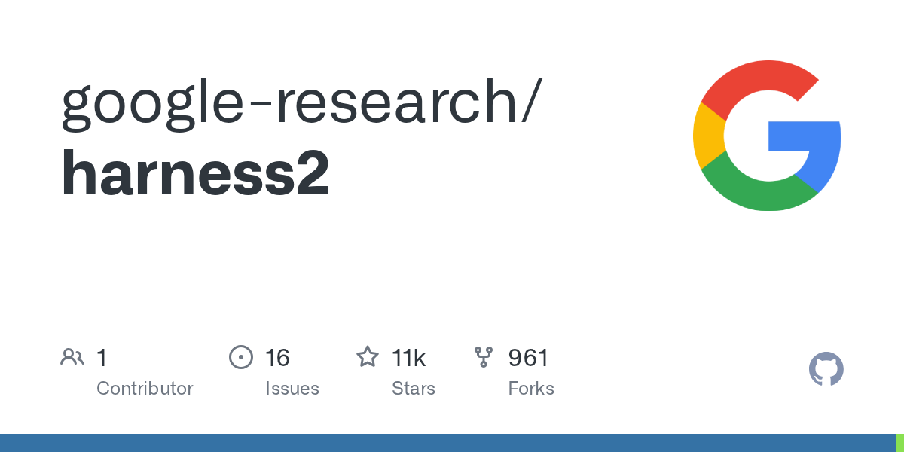
Google Research 的 Harness² 在不改模型权重的情况下提出、测试并组合智能体框架调整，还保留经验供后续任务使用。项目报告专业工作基准提升，支持 OpenCode 和 Codex 执行器，重点在提示、记忆、工具及编排的优化。

一位开发者发布 Qwen3-4B 微调模型，希望无需特殊系统提示即可减少模板化文风。作者在 40 个留出提示上报告自定义风格分数明显改善，并强调必须同时过滤任务完成质量；模型仍有虚构细节、文风平淡及评估范围有限等问题。
Google 展示 Gemini 4 Argon 协调子智能体、Blender MCP 与 Nano Banana，将真实桌面照片转成可玩的三维赛道。这是产品演示而非受控基准，但具体呈现了视觉理解、工具编排及素材生成如何组成交互制作流程。
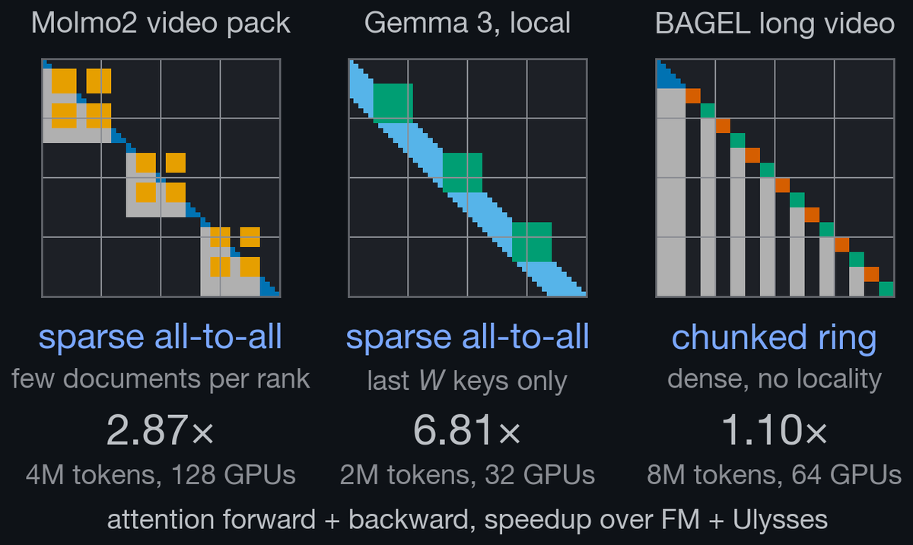
Luma 介绍针对打包多模态注意力掩码的序列并行方法，逐层选择 ring attention、稀疏 all-to-all 或 Ulysses。帖子称其匹配单 GPU 数值，在最多 128 张 H100 的 48 个案例中有 47 个优于对比方案。
Thomas Wolf 称 FLUX.1-dev 在 Hugging Face Hub 上约有 4.3 万个衍生模型，并对比欧洲开放模型训练算力占比与下游构建占比。这些是生态观察而非标准化经济指标，说明模型复用可体现训练投入之外的影响力。
Pika 展示在 ChatGPT 中通过 Camera Director 为现有视频加入环绕或缓慢推进等运镜，并称原有表演保持不变。它体现了对具体视频编辑功能的对话式调用，但短演示尚不足以证明跨素材的稳定性。
Nathan Lambert 表示，模型在幻灯片、连贯计划及较长内容设计上的体验，使他认为通用智能仍需时间。这属于实践者评论而非基准测试，提醒团队不要直接把编程表现外推到其他知识工作。
Sara Hooker 认为 transformer 的边际提升趋势，使研究更关注后训练与推理时计算，并将不少预训练进展描述为数据配方调整。这是研究观点，不能理解为预训练已经终结；它有助于区分能力提升的不同来源。
Thomas Wolf 描述让 Claude 将对齐主题的头脑风暴文档转为类似 Zelda 的游戏，并以《钻石时代》的自适应教学书作类比。这展示了技术材料向交互教学形式的转化，但尚未验证学习效果。
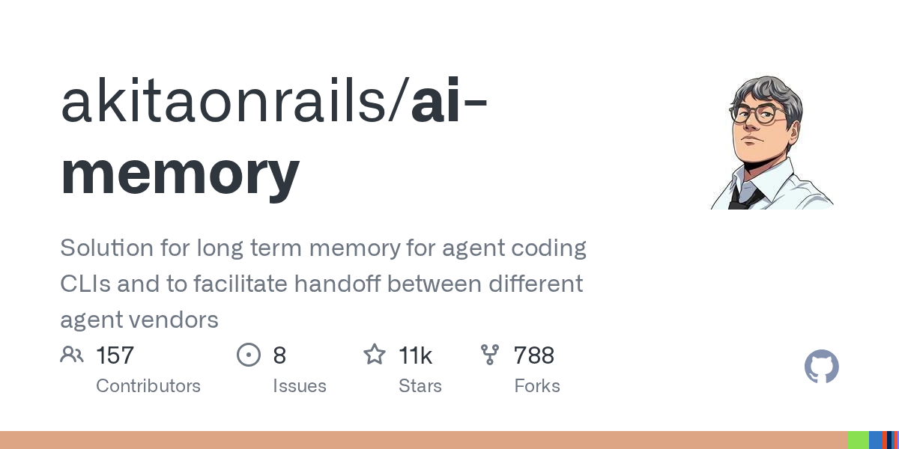
趋势项目 ai-memory 以 Rust 构建，面向编程智能体命令行工具的长期记忆与跨厂商交接。其目标是缓解换助手或新会话时的上下文丢失；当前收集到的项目描述尚不能证明兼容覆盖及可靠性。
ComfyUI 出现在趋势仓库中，提供扩散模型的模块化图形界面、API 与后端。节点式流程便于组织可复用的生成管线。项目描述中的速度宣传缺乏本次采集可验证的比较基准，因此重点关注其可编程流程结构。
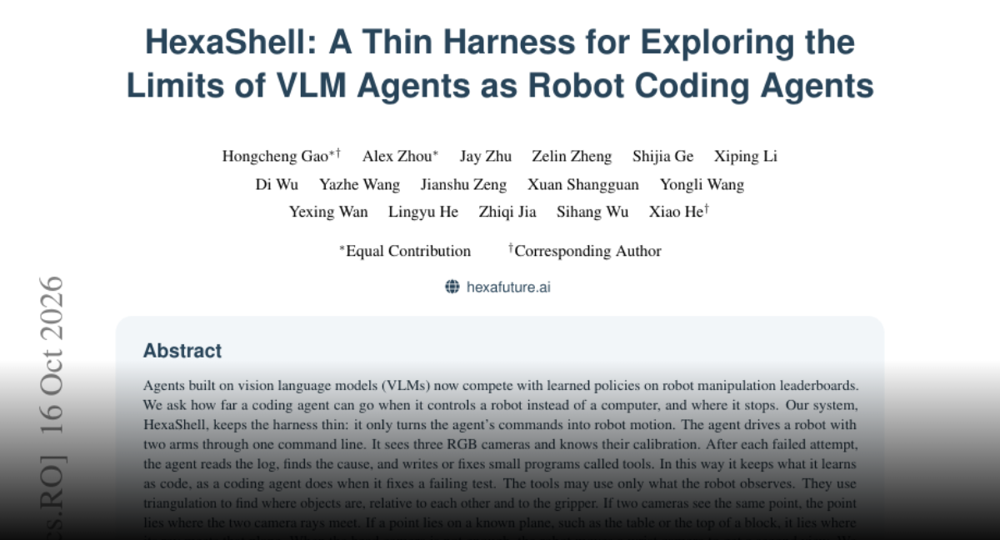
HexaShell 用薄封装将视觉语言编程智能体命令转为机器人动作，并从失败中生成可复用工具。论文报告 42 个 RoboDojo 任务成功率 39.7%，推物明显优于紧密插入，说明理解失败并不意味着能完成接触复杂的物理操作。
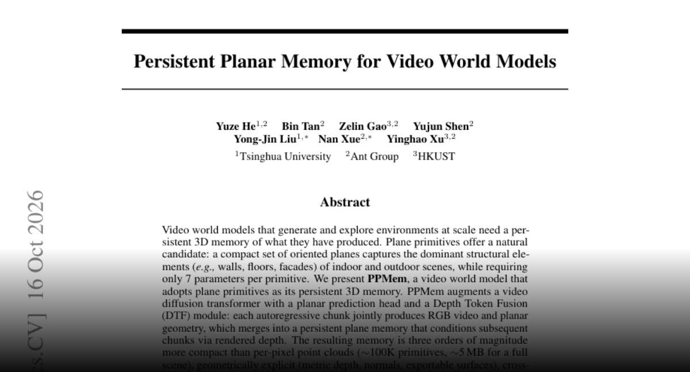
PPMem 用平面表示视频世界模型的持久三维记忆，生成视频块时同时预测几何，再以渲染深度辅助后续生成。论文报告完整场景约 5MB 的表示及两个数据集上的质量提升，兼顾跨视角一致性与可导出几何。
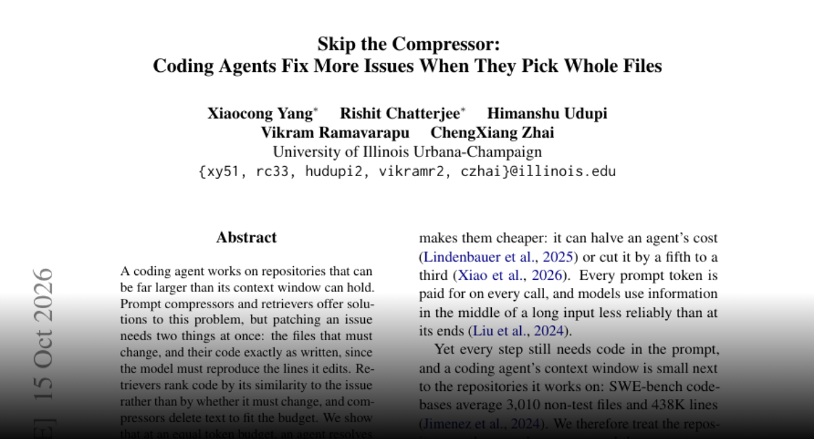
研究在 300 个 SWE-rebench 问题上以相同 token 预算比较上下文策略。CQ2-CARE 原样保留选中文件，报告优于所测压缩器及检索器。作者认为漏掉待改文件或改变源文本会导致补丁失败，强调以修复效果衡量上下文价值。
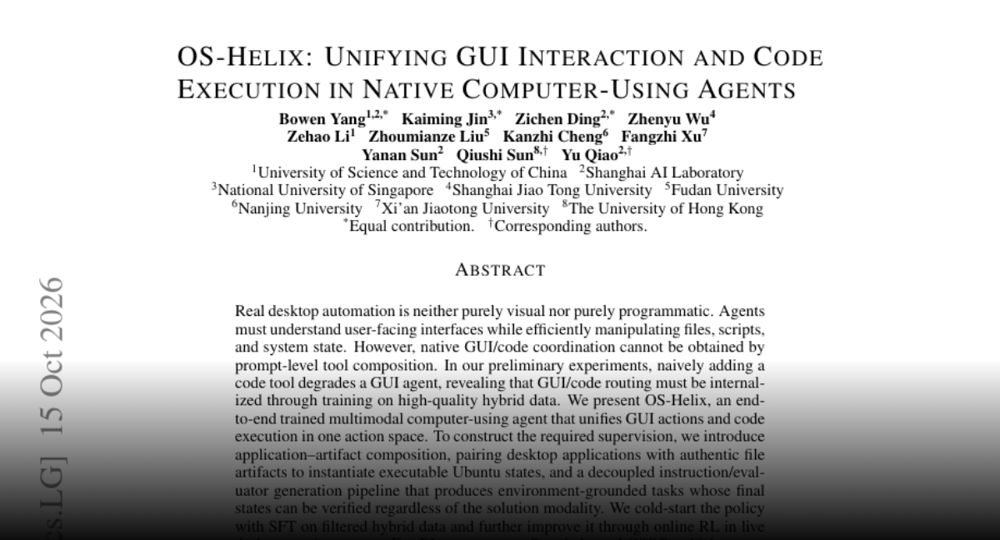
OS-Helix 在统一动作空间训练图形操作与代码执行。作者发现简单添加代码工具可能损害 GUI 智能体表现，因此采用混合监督及强化学习，并按动作步平衡优化。论文最强变体在 OSWorld-Verified 上报告 66.44% 成功率。
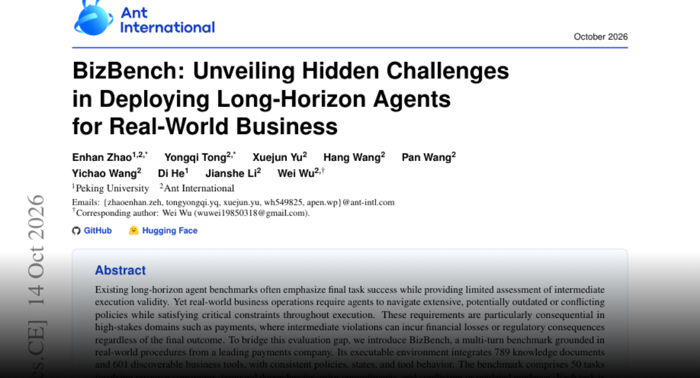
BizBench 同时评估业务智能体的最终目标与中间执行有效性，环境包含 789 份文档、601 个工具及 50 个任务。论文领先模型严格成功率为 64.0% 和 61.3%，表明最终完成任务可能掩盖过程中的约束违规。
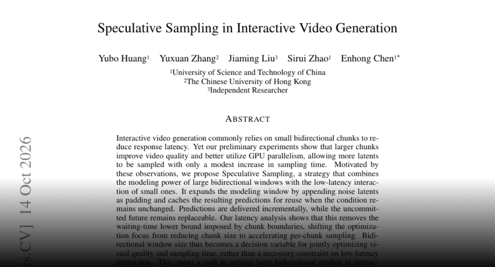
新论文提出交互视频的推测采样：使用较大双向窗口、缓存条件未变时的预测，并逐步交付，同时允许替换尚未提交的未来内容。作者认为这可缓解视频块边界造成的等待下限，但摘要尚不能证明普遍生产性能提升。
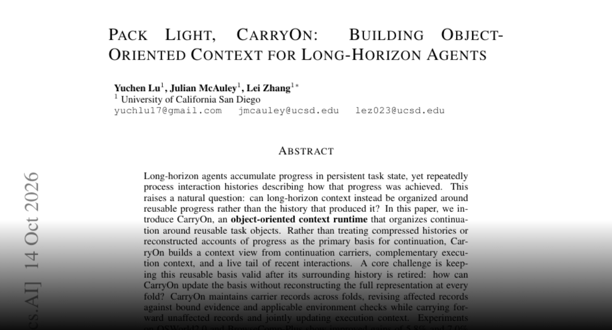
CarryOn 用可复用任务对象、执行上下文及近期交互片段替代反复处理历史，并依据证据及环境检查更新受影响记录。论文报告两个基准表现提升，token 使用分别降低 51.9% 和 22.9%，核心是直接保存可继续执行的进展。